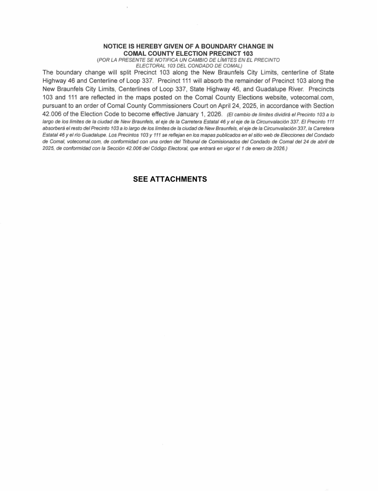
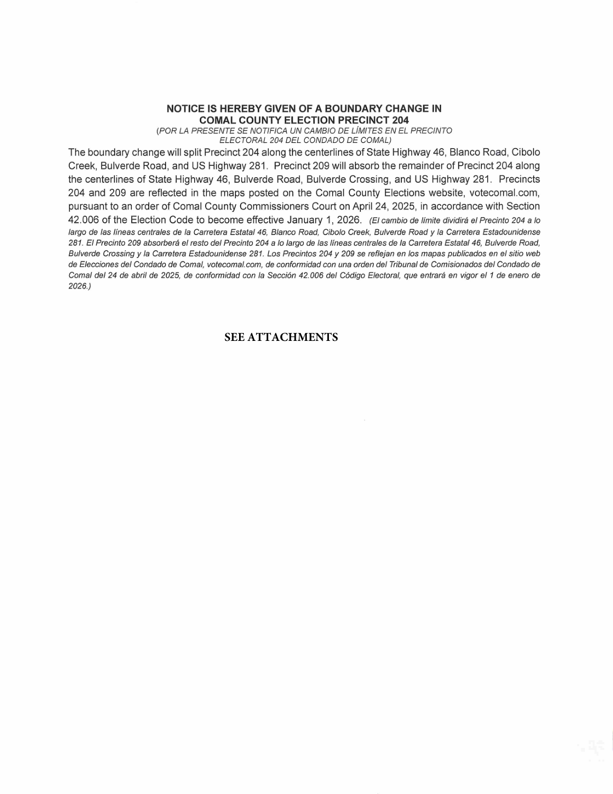
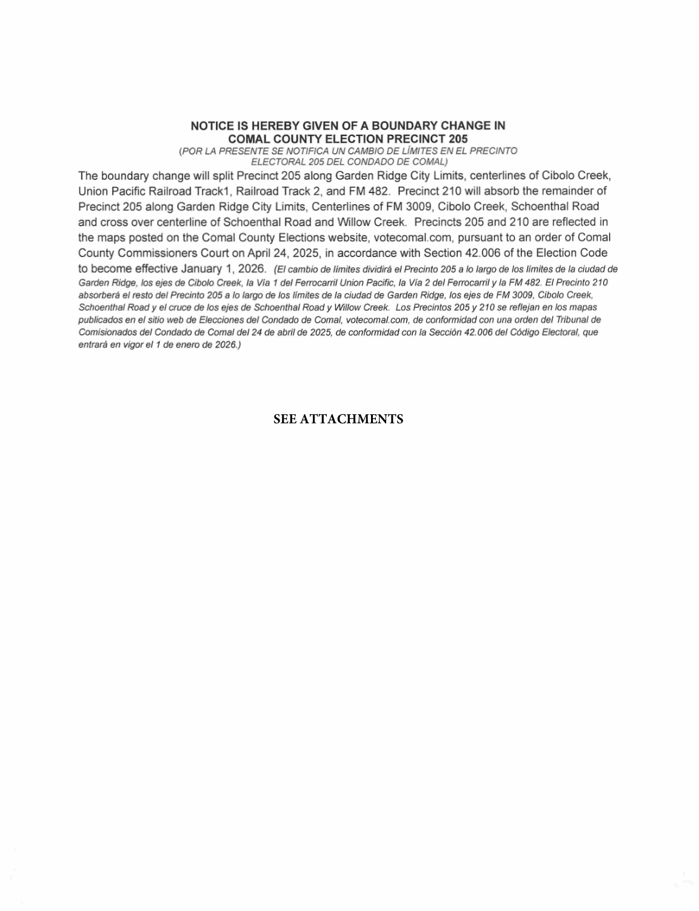
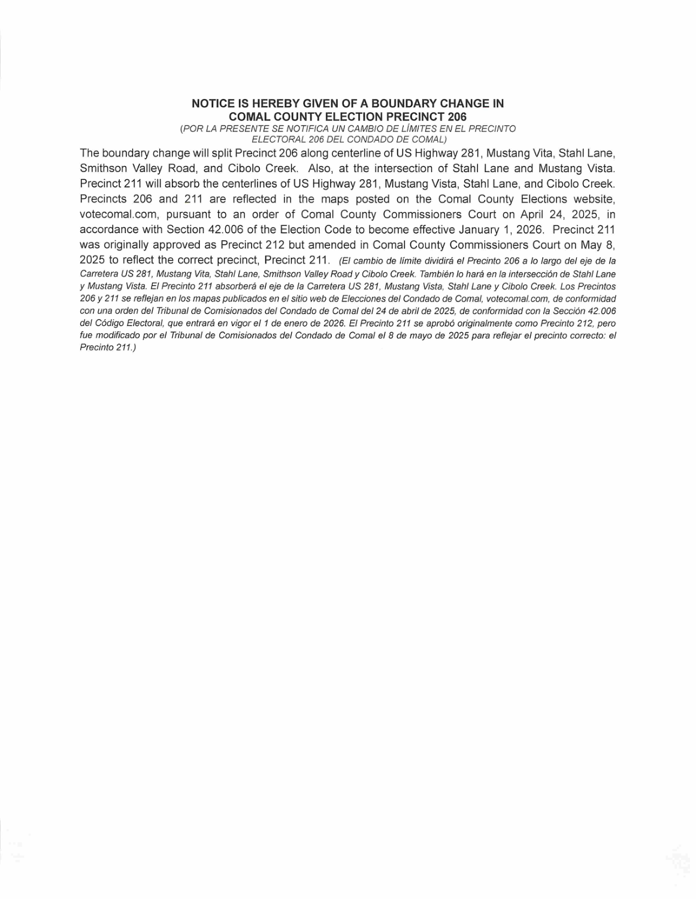
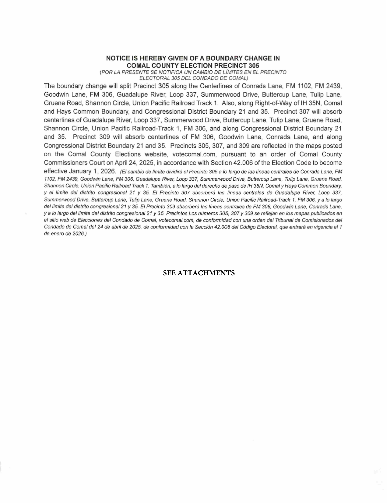
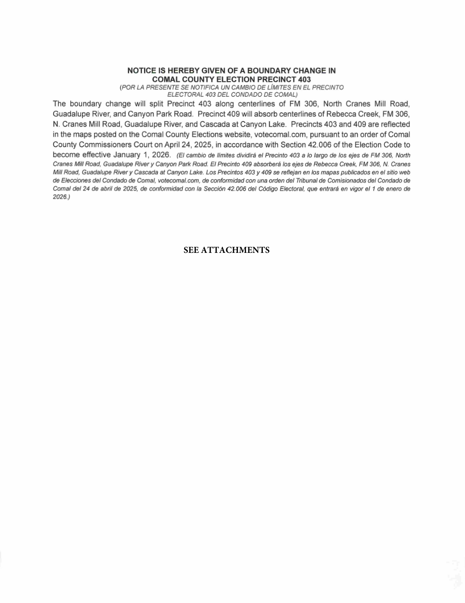
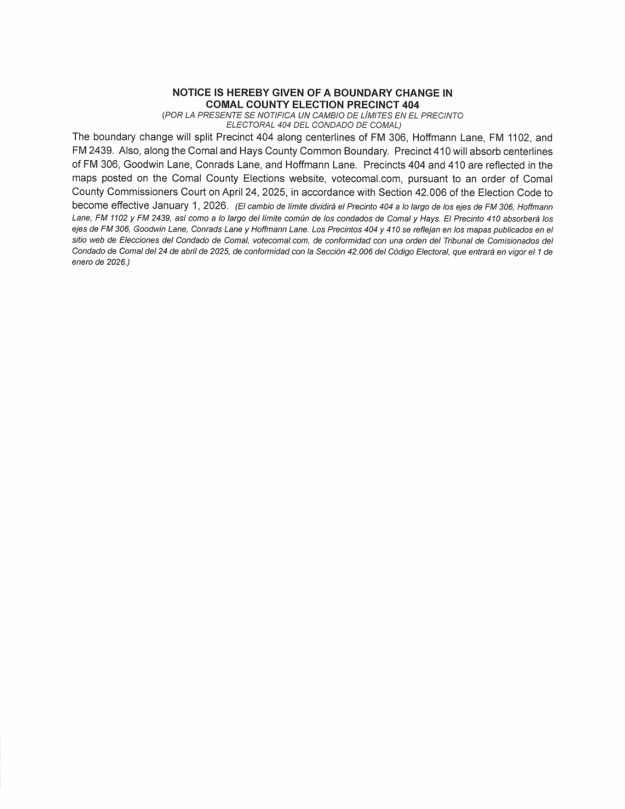
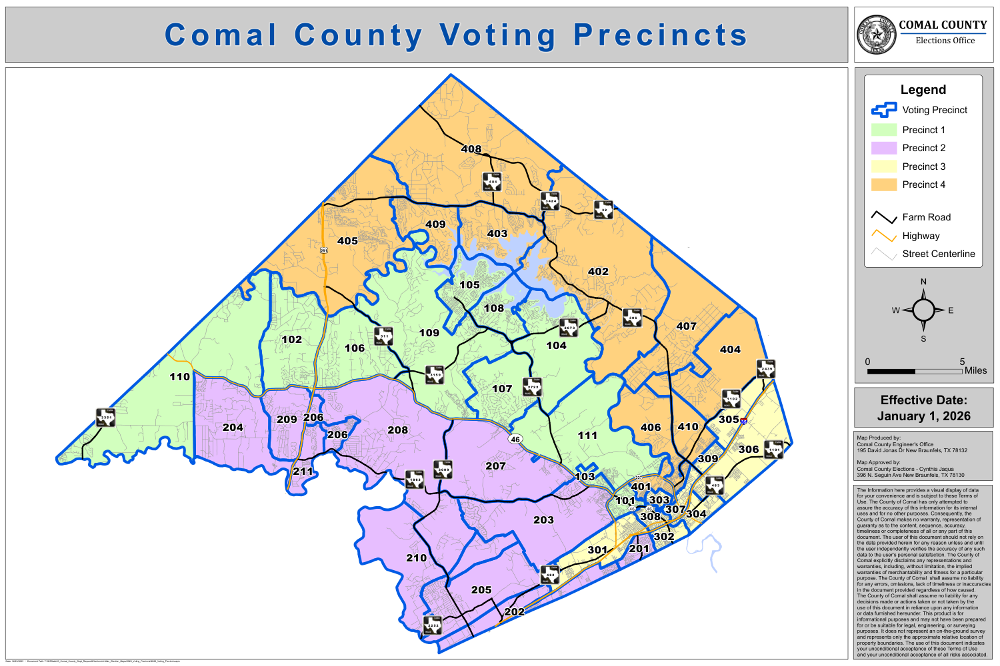

← Texas offline indexComal County
Priority 20 of34 48091 • 103,324 accepted2024 Senate candidate votes
County page explicitly states maps effective January1 2026 and links7 boundary-change notices plus a countywide map. All8 originals retained, including proposed-map attachment wording; effective/adoption statements remain source text, not a reporting crosswalk.
Complete county reference boundaries
Each ZIP copies every source SHP geometry body and DBF record verbatim. Only SHP/SHX headers, record numbering and county bounds are rebuilt. All attributes, rings and vertices remain; no simplification, topology repair or vote allocation. Native CRS: NAD83 Texas Lambert Conformal Conic, metre, X=easting/Y=northing.
Actual county originals
Notice of Boundary Change in Precinct 103 (PDF) • 4 pages
HTTP provenance, original hash and reconstruction
Published source • Complete extracted source text (gzip)
local-comal-1-p0001.png
local-comal-1-p0003.png
local-comal-1-p0004.png

Selected page previews only; complete original has 4 pages. Literal legal/date text is in pdf/inspection.json. Upload/retrieval dates do not establish current adoption.
Notice of Boundary Change in Precinct 204 (PDF) • 4 pages
HTTP provenance, original hash and reconstruction
Published source • Complete extracted source text (gzip)
local-comal-2-p0001.png
local-comal-2-p0003.png
local-comal-2-p0004.png

Selected page previews only; complete original has 4 pages. Literal legal/date text is in pdf/inspection.json. Upload/retrieval dates do not establish current adoption.
Notice of Boundary Change in Precinct 205 (PDF) • 4 pages
HTTP provenance, original hash and reconstruction
Published source • Complete extracted source text (gzip)
local-comal-3-p0001.png
local-comal-3-p0003.png
local-comal-3-p0004.png

Selected page previews only; complete original has 4 pages. Literal legal/date text is in pdf/inspection.json. Upload/retrieval dates do not establish current adoption.
Notice of Boundary Change in Precinct 206 (PDF) • 4 pages
HTTP provenance, original hash and reconstruction
Published source • Complete extracted source text (gzip)
local-comal-4-p0001.png
local-comal-4-p0003.png
local-comal-4-p0004.png

Selected page previews only; complete original has 4 pages. Literal legal/date text is in pdf/inspection.json. Upload/retrieval dates do not establish current adoption.
Notice of Boundary Change in Precinct 305 (PDF) • 5 pages
HTTP provenance, original hash and reconstruction
Published source • Complete extracted source text (gzip)
local-comal-5-p0001.png
local-comal-5-p0003.png
local-comal-5-p0005.png

Selected page previews only; complete original has 5 pages. Literal legal/date text is in pdf/inspection.json. Upload/retrieval dates do not establish current adoption.
Notice of Boundary Change in Precinct 403 (PDF) • 4 pages
HTTP provenance, original hash and reconstruction
Published source • Complete extracted source text (gzip)
local-comal-6-p0001.png
local-comal-6-p0003.png
local-comal-6-p0004.png

Selected page previews only; complete original has 4 pages. Literal legal/date text is in pdf/inspection.json. Upload/retrieval dates do not establish current adoption.
Notice of Boundary Change in Precinct 404 (PDF) • 4 pages
HTTP provenance, original hash and reconstruction
Published source • Complete extracted source text (gzip)
local-comal-7-p0001.png
local-comal-7-p0003.png
local-comal-7-p0004.png

Selected page previews only; complete original has 4 pages. Literal legal/date text is in pdf/inspection.json. Upload/retrieval dates do not establish current adoption.
Map with all voting precincts displayed (PDF) • 1 pages
HTTP provenance, original hash and reconstruction
Published source • Complete extracted source text (gzip)
local-comal-8-p0001.png

Selected page previews only; complete original has 1 pages. Literal legal/date text is in pdf/inspection.json. Upload/retrieval dates do not establish current adoption.
Source routes and precise access outcomes
Native reporting compatibility
127 source-scoped reporting identities accounted: {"unknown": 127}. Exact literal ID overlap is ambiguous, not an approved crosswalk. Test/older election classes, vote centers and administrative groups remain separate.
All identity-by-identity diagnostics • Full accepted constituent inventory